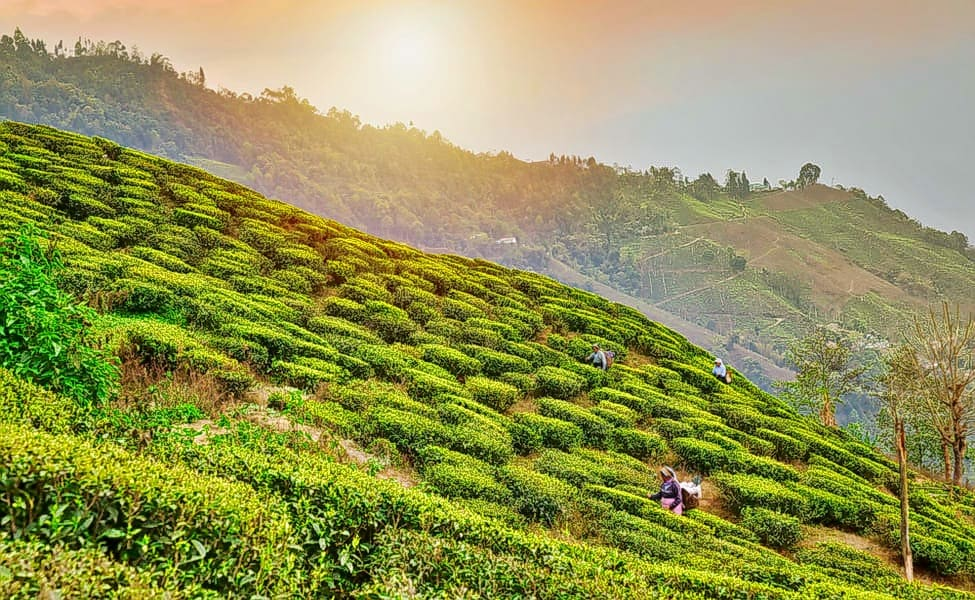

- Victoria Memorial
- Indian Museum
- Darjeeling
- Sundarbans National Park
- Kalimpong
Victoria Memorial
Representing the resplendent and majestic British architecture, Victoria Memorial Hall stands today, as a veritable icon of the city of Kolkata. Located on 1 Queen's way, the VMH was envisaged by Lord Curzon, the Viceroy of British India, as a memorial to the deceased Queen Victoria.

Indian Museum
The Indian Museum is the largest and oldest museum in India and has rare collections of antiques, armour and ornaments, fossils, skeletons, mummies, and Mughal paintings. It was founded by the Asiatic Society of Bengal in Kolkata (Calcutta), India, in 1814.

Darjeeling
Darjeeling is famous throughout the world for the tea it grows and the great view of the Kanchenjunga range of mountains that it offers. It is also known for its richness in cultural & natural heritage and the famous toy train that has been declared a UN heritage.
Sundarbans National Park
The Sundarbans is of universal importance for globally endangered species including the Royal Bengal Tiger, Ganges and Irawadi dolphins, estuarine crocodiles and the critically endangered endemic river terrapin.

Kalimpong
67 Km from Siliguri, Kalimpong is a beautiful hill-town in North Bengal which can be reached from either Siliguri or Darjeeling. It is popular for its panoramic valley views, Buddhists monasteries, churches and Tibetan handicrafts.

West Bengal is a state in the eastern portion of India. It is
situated along the Bay of Bengal, along with a population of over 91
million inhabitants within an area of 88,752 km2.
West Bengal is the fourth-most populous and thirteenth-largest state
by area in India, as well as the eighth-most populous country
subdivision of the world. As a part of the Bengal region of the
Indian subcontinent, it borders Bangladesh in the east, and Nepal
and Bhutan in the north. It also borders the Indian states of
Odisha, Jharkhand, Bihar, Sikkim and Assam. The state capital is
Kolkata, the third-largest metropolis, and seventh largest city by
population in India. West Bengal includes the Darjeeling Himalayan
hill region, the Ganges delta, the Rarh region, the coastal
Sundarbans and the Bay of Bengal. The state's main ethnic group are
the Bengalis, with the Bengali Hindus forming the demographic
majority.
The area's early history featured a succession of Indian empires,
internal squabbling, and a tussle between Hinduism and Buddhism for
dominance. Ancient Bengal was the site of several major Janapadas,
while the earliest cities date back to the Vedic period. The region
was part of several ancient pan-Indian empires, including the
Vangas, Mauryans, and the Guptas. The citadel of Gauḍa served as the
capital of the Gauḍa Kingdom, the Pala Empire, and the Sena Empire.
Islam was introduced through trade with the Abbasid Caliphate, but
following the Ghurid conquests led by Bakhtiyar Khalji and the
establishment of the Delhi Sultanate, the Muslim faith spread across
the entire Bengal region. During the Bengal Sultanate, the territory
was a major trading nation in the world, and was often referred by
the Europeans as the "richest country to trade with". It was
absorbed into the Mughal Empire in 1576. Simultaneously, some parts
of the region were ruled by several Hindu states, and Baro-Bhuyan
landlords, and part of it was briefly overrun by the Suri Empire.
Following the death of Emperor Aurangzeb in the early 1700s, the
proto-industrialised Mughal Bengal became a semi-independent state
under the Nawabs of Bengal, and showed signs of the first Industrial
revolution. The region was later conquered by the British
East India Company at the Battle of Plassey in 1757 and became part
of the Bengal Presidency. From 1772 to 1911, Calcutta was
the capital of British India. From 1912 to India's Independence in
1947, it was the capital of all of Bengal.
The region was a hotbed of the Indian independence movement and has
remained one of India's great artistic and intellectual centres.
Following widespread religious violence, the Bengal Legislative
Council and the Bengal Legislative Assembly voted on the Partition
of Bengal in 1947 along religious lines into two independent
dominions: West Bengal, a Hindu-majority Indian state, and East
Bengal, a Muslim-majority province of Pakistan which later became
the independent Bangladesh. The early and prolonged exposure to
British administration resulted in an expansion of Western
education, culminating in developments in science, institutional
education, and social reforms in the region, including what became
known as the Bengali Renaissance. Several regional and pan-Indian
empires throughout Bengal's history have shaped its culture,
cuisine, and architecture.
Weather
Get Direction
MADE BY TEAM WEBMATES
- Anunay


- Ayush
-
-
-
- Shubham
-
-
-